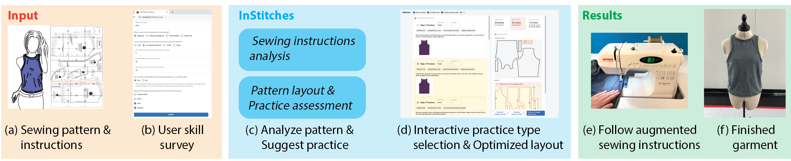

InStitches: Augmenting Sewing Patterns with Personalized Material-Efficient Practice

Figure 1. InStitches augments existing sewing patterns with targeted practice tasks that are efficient in terms of time and materials. Starting with an (a) input sewing pattern and instructions and a (b) user skill survey, it automatically (c) suggests practice steps and (d) provides a layout for creating accompanying practice pieces for tasks that the user is likely to find difficult. The user then (e) follows these interwoven practice and main pattern sewing steps to produce a (f) finished garment.
ABSTRACT
There is a rapidly growing group of people learning to sew online. Without hands-on instruction, these learners are often left to discover the challenges and pitfalls of sewing through trial and error, which can be a frustrating and wasteful process. We present InStitches, a software tool that augments existing sewing patterns with targeted practice tasks to guide users through the skills needed to complete their chosen project. InStitches analyzes the difficulty of sewing instructions relative to a user’s reported expertise in order to determine where practice will be helpful and then solves for a new pattern layout that incorporates additional practice steps while optimizing for efficient use of available materials. Our user evaluation indicates that InStitches can successfully identify challenging sewing tasks and augment existing sewing patterns with practice tasks that users find helpful, showing promise as a tool for helping those new to the craft.